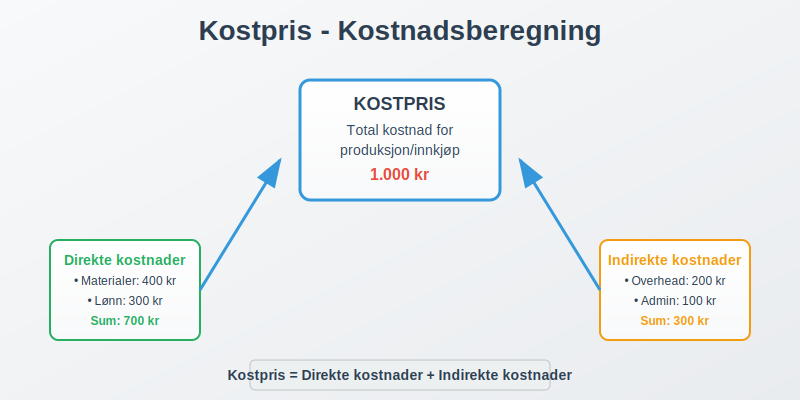
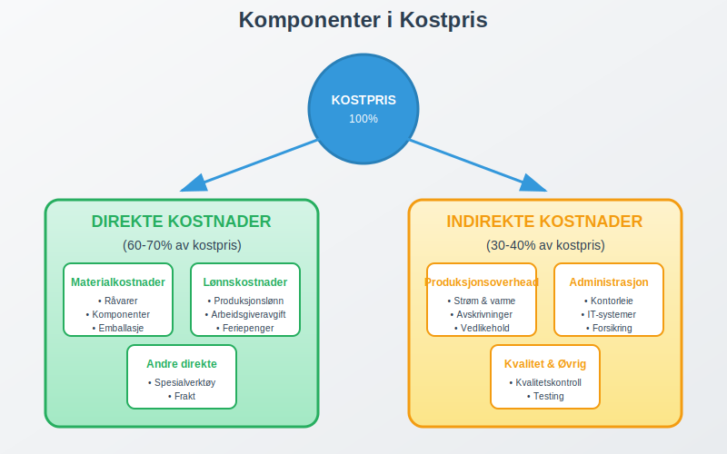
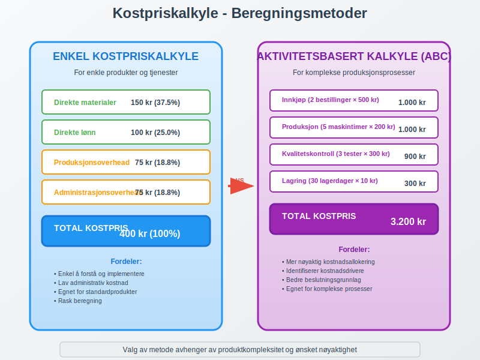
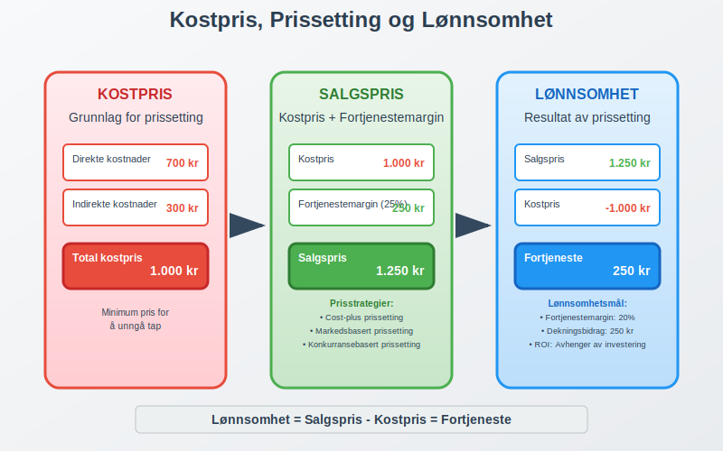
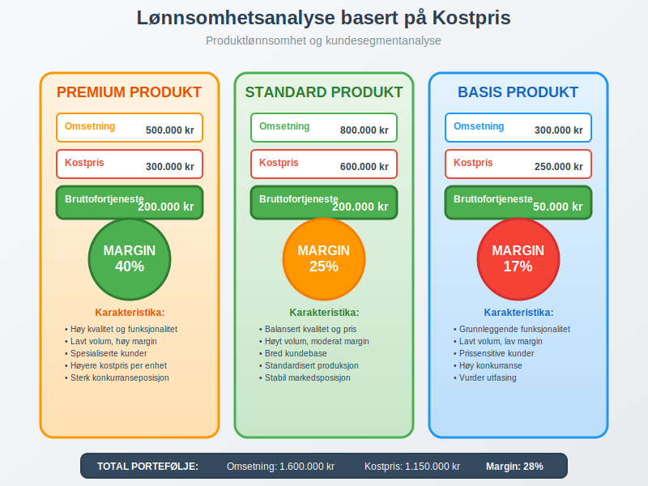

Kostpris er den totale kostnaden det koster å produsere, kjøpe inn eller fremstille en vare eller tjeneste. Dette er et grunnleggende regnskapskonsept som danner basis for prissetting, lønnsomhetsanalyse og driftsregnskap, og er nært knyttet til varekostnad.

Hva er Kostpris?
Kostpris, også kalt selvkost eller tilvirkningskost, omfatter alle direkte og indirekte kostnader som er nødvendige for å få et produkt eller en tjeneste klar for salg. Dette inkluderer både anskaffelseskost for råvarer og alle kostnader knyttet til produksjon og distribusjon.
Kostpris er fundamentalt for:
- Prissetting: Grunnlag for å sette salgspriser som sikrer lønnsomhet
- Lønnsomhetsanalyse: Beregning av avanse og dekningsbidrag
- Budsjettering: Planlegging av driftskostnader
- Regnskapsføring: Korrekt verdsetting av lagerbeholdning
Komponenter i Kostpris
Kostpris består av flere hovedkomponenter som varierer avhengig av bransje og produksjonstype:

Direkte Kostnader
Direkte materialkostnader:
- Råvarer og komponenter som inngår direkte i produktet
- Emballasje og pakking
- Spesialverktøy og utstyr til spesifikke produkter
Direkte lønnskostnader:
- Lønn til produksjonsarbeidere
- Arbeidsgiveravgift på produksjonslønn
- Feriepenger knyttet til produksjon
Indirekte Kostnader (Overhead)
Produksjonsoverhead:
- Strøm og oppvarming i produksjonslokaler
- Avskrivning på produksjonsutstyr
- Vedlikehold av maskiner og utstyr
- Kvalitetskontroll og testing
Administrasjonsoverhead:
- Lønn til ledelse og administrasjon
- Kontorleie og kontorrekvisita
- IT-systemer og programvare
- Forsikringer og avgifter
Kostpriskalkyle - Beregningsmetoder
Det finnes flere metoder for å beregne kostpris, avhengig av virksomhetens art og kompleksitet:

Enkel Kostpriskalkyle
For enkle produkter eller tjenester:
| Kostnadselement | Beløp (NOK) | Prosent |
|---|---|---|
| Direkte materialer | 150 | 37.5% |
| Direkte lønn | 100 | 25.0% |
| Produksjonsoverhead | 75 | 18.8% |
| Administrasjonsoverhead | 75 | 18.8% |
| Total kostpris | 400 | 100% |
Aktivitetsbasert Kostpriskalkyle (ABC)
For komplekse produksjonsprosesser:
| Aktivitet | Kostnadsdrivere | Kostnad per enhet | Antall | Total kostnad |
|---|---|---|---|---|
| Innkjøp | Antall bestillinger | 500 | 2 | 1.000 |
| Produksjon | Maskintimer | 200 | 5 | 1.000 |
| Kvalitetskontroll | Antall tester | 300 | 3 | 900 |
| Lagring | Lagerdager | 10 | 30 | 300 |
| Total kostpris | 3.200 |
Kostpris i Ulike Bransjer
Kostprisberegning varierer betydelig mellom bransjer:
Produksjonsbedrifter
Karakteristika:
- Høye materialkostnader (50-70% av kostpris)
- Betydelige investeringer i produksjonsutstyr
- Komplekse produksjonsprosesser
Eksempel - Møbelprodusent:
Direkte materialer (tre, beslag): 2.500 kr
Direkte lønn (snekker, 8 timer): 800 kr
Produksjonsoverhead (maskiner): 600 kr
Administrasjon og salg: 400 kr
Total kostpris: 4.300 kr
Tjenestebedrifter
Karakteristika:
- Høye lønnskostnader (60-80% av kostpris)
- Lave materialkostnader
- Fokus på kompetanse og tid
Eksempel - Regnskapsbyrå (Hva er et regnskapsbyrå?):
Direkte lønn (regnskapsfører, 10 timer): 1.500 kr
Indirekte lønn (ledelse, support): 300 kr
Kontorleie og utstyr: 200 kr
IT-systemer og lisenser: 150 kr
Total kostpris: 2.150 kr
Handelsvirksomheter
Karakteristika:
- Inntakskost dominerer kostpris
- Lave produksjonskostnader
- Fokus på logistikk og distribusjon
Eksempel - Elektronikkhandel:
Innkjøpspris fra leverandør: 8.000 kr
Frakt og toll: 400 kr
Lagerkostnader: 200 kr
Administrasjon og salg: 600 kr
Total kostpris: 9.200 kr
Kostpris og Prissetting
Kostpris danner grunnlaget for strategisk prissetting:

Kostnadsbasert Prissetting
Cost-plus metoden:
Kostpris: 1.000 kr
Ønsket fortjenestemargin: 25%
Salgspris: 1.250 kr
Dekningsbidragsanalyse
| Produkt | Salgspris | Kostpris | Dekningsbidrag | DB% |
|---|---|---|---|---|
| Produkt A | 1.500 | 1.000 | 500 | 33% |
| Produkt B | 2.200 | 1.800 | 400 | 18% |
| Produkt C | 800 | 600 | 200 | 25% |
Regnskapsføring av Kostpris
Korrekt regnskapsføring av kostpris er avgjørende for nøyaktig finansregnskap:
Produksjonsbedrifter
Ved innkjøp av råvarer:
Debet: Råvarelager 50.000
Kredit: Leverandørgjeld 50.000
Ved produksjon:
Debet: Varer under tilvirkning 75.000
Kredit: Råvarelager 30.000
Kredit: Lønn 25.000
Kredit: Produksjonsoverhead 20.000
Ved ferdigstillelse:
Debet: Ferdigvarelager 75.000
Kredit: Varer under tilvirkning 75.000
Ved salg:
Debet: Varekostnad 75.000
Kredit: Ferdigvarelager 75.000
Handelsvirksomheter
Ved innkjøp:
Debet: Varelager 100.000
Kredit: Leverandørgjeld 100.000
Ved salg:
Debet: Varekostnad 80.000
Kredit: Varelager 80.000
Kostnadskontroll og Optimalisering
Effektiv kostnadskontroll er essensielt for lønnsomhet:
Kostnadsdrivere
Identifisering av hovedkostnadsdrivere:
- Materialforbruk og svinn
- Produksjonseffektivitet
- Kvalitetsproblemer og reklamasjoner
- Lagerhold og kapitalbinding
- Systematisk oppfølging gjennom lagerrapporter
Kostnadsreduksjonstiltak
Materialkostnader:
- Forhandling med leverandører
- Alternativ sourcing
- Reduksjon av svinn og avfall
- Standardisering av komponenter
Lønnskostnader:
- Automatisering av prosesser
- Kompetanseutvikling
- Effektivisering av arbeidsflyt
- Outsourcing av ikke-kritiske funksjoner
Overheadkostnader:
- Energieffektivisering
- Optimalisering av lokaler
- Digitalisering av prosesser
- Felles tjenester og systemer
Kostpris og Lønnsomhetsanalyse
Kostpris er grunnlaget for omfattende lønnsomhetsanalyser:

Produktlønnsomhet
| Produkt | Omsetning | Kostpris | Bruttofortjeneste | Margin% |
|---|---|---|---|---|
| Premium | 500.000 | 300.000 | 200.000 | 40% |
| Standard | 800.000 | 600.000 | 200.000 | 25% |
| Basis | 300.000 | 250.000 | 50.000 | 17% |
| Total | 1.600.000 | 1.150.000 | 450.000 | 28% |
Kundelønnsomhet
Analyse per kundesegment:
- Store kunder: Lavere kostpris per enhet, høyere volum
- Mellomstore kunder: Balansert kostnad og margin
- Små kunder: Høyere kostpris per enhet, lavere volum
Kostpris i Digitale Tjenester
Moderne digitale virksomheter har unike kostprisutfordringer:
Software-as-a-Service (SaaS)
Kostnadselementer:
- Utviklingskostnader (amortisert)
- Hosting og infrastruktur
- Kundesupport
- Markedsføring og salg
Eksempel - SaaS-plattform:
Utviklingskostnader (månedlig): 15.000 kr
Hosting per kunde: 50 kr
Support per kunde: 100 kr
Salg og markedsføring: 8.000 kr
Total kostpris per kunde: 150 kr
Internasjonale Regnskapsstandarder
Kostpris behandles ulikt under forskjellige regnskapsstandarder:
IFRS (International Financial Reporting Standards)
IAS 2 - Varelager:
- Kostpris skal inkludere alle kostnader for å bringe varen til nåværende tilstand og lokasjon
- Finansieringskostnader skal normalt ikke inkluderes
- Faste produksjonskostnader allokeres basert på normal kapasitet
Norske Regnskapsstandarder
NRS 9 - Varelager:
- Tilsvarende prinsipper som IFRS
- Større fleksibilitet for små og mellomstore bedrifter
- Mulighet for forenklede metoder
Kostpris og Skattemessige Konsekvenser
Kostprisberegning påvirker skattemessige forhold:
Lagerverdi og Skatt
Høyere kostpris:
- Høyere lagerverdi i balansen
- Lavere driftsresultat
- Redusert skatteplikt
Lavere kostpris:
- Lavere lagerverdi
- Høyere driftsresultat
- Økt skatteplikt
Kostpris i Prosjektbaserte Virksomheter
Spesielle utfordringer for prosjektbaserte virksomheter:
Prosjektkostnadskalkyle
Direkte prosjektkostnader:
- Lønn til prosjektmedarbeidere
- Reise og opphold
- Spesialutstyr og materialer
- Eksterne konsulenter
Indirekte prosjektkostnader:
- Prosjektledelse
- Administrasjon
- Risikopremie
- Fortjenestemargin
Eksempel - IT-prosjekt:
Direkte lønn (500 timer à 800 kr): 400.000 kr
Reise og opphold: 25.000 kr
Programvare og lisenser: 50.000 kr
Prosjektledelse (20%): 95.000 kr
Administrasjon (15%): 85.500 kr
Total kostpris: 655.500 kr
Kostpris og Kvalitetsstyring
Kvalitet påvirker kostpris betydelig:
Kvalitetskostnader
Forebyggende kostnader:
- Kvalitetssystemer og prosedyrer
- Opplæring og kompetanseutvikling
- Kvalitetskontrollutstyr
Vurderingskostnader:
- Inspeksjon og testing
- Kvalitetsaudit
- Sertifisering
Feilkostnader:
- Intern svinn og omarbeid
- Reklamasjoner og garantikostnader
- Tap av kunder og omdømme
Fremtidige Trender i Kostprisstyring
Kostprisstyring utvikler seg med teknologiske fremskritt:
Digitalisering og Automatisering
Kunstig intelligens:
- Automatisk kostnadskategorisering
- Prediktiv kostprisstyring
- Sanntids kostnadssporing
Internet of Things (IoT):
- Sanntidsdata fra produksjonsutstyr
- Automatisk ressursforbruksmåling
- Prediktivt vedlikehold
Bærekraft og ESG
Miljøkostnader:
- Karbonavtrykk i kostprisberegning
- Sirkulær økonomi og gjenbruk
- Bærekraftige materialer og prosesser
Sosiale kostnader:
- Arbeidsforhold i leverandørkjeden
- Lokal verdiskaping
- Etisk sourcing
Konklusjon
Kostpris er et fundamentalt regnskapskonsept som påvirker alle aspekter av virksomhetsstyring. Fra prissetting og lønnsomhetsanalyse til strategiske beslutninger og regnskapsføring, er nøyaktig kostprisberegning avgjørende for suksess.
Moderne virksomheter må mestre både tradisjonelle kostprisprinsipper og nye utfordringer knyttet til digitalisering, bærekraft og komplekse verdikjeder. Ved å implementere robuste systemer for kostprisstyring kan bedrifter oppnå bedre lønnsomhet, mer nøyaktig rapportering og sterkere konkurranseevne.
Effektiv kostprisstyring krever kontinuerlig oppmerksomhet på kostnadsdrivere, regelmessig analyse av lønnsomhet og proaktiv tilpasning til endringer i marked og teknologi.